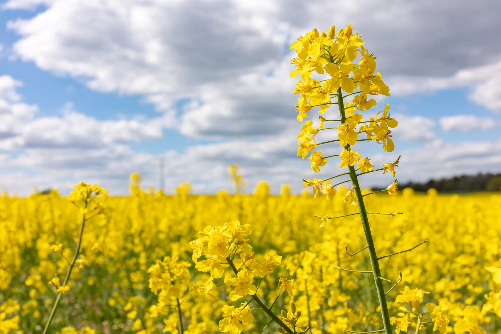
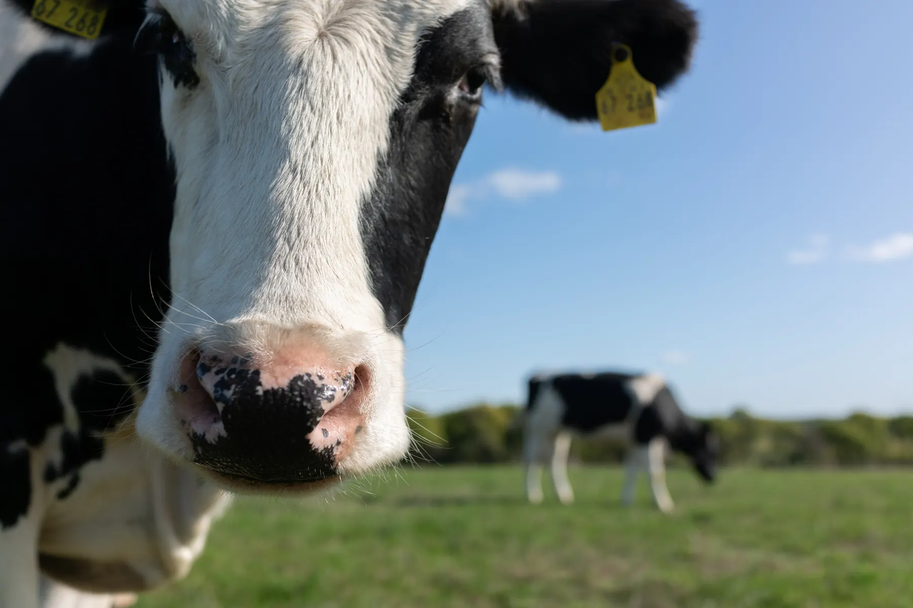
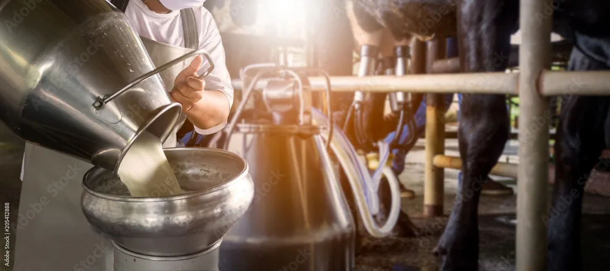
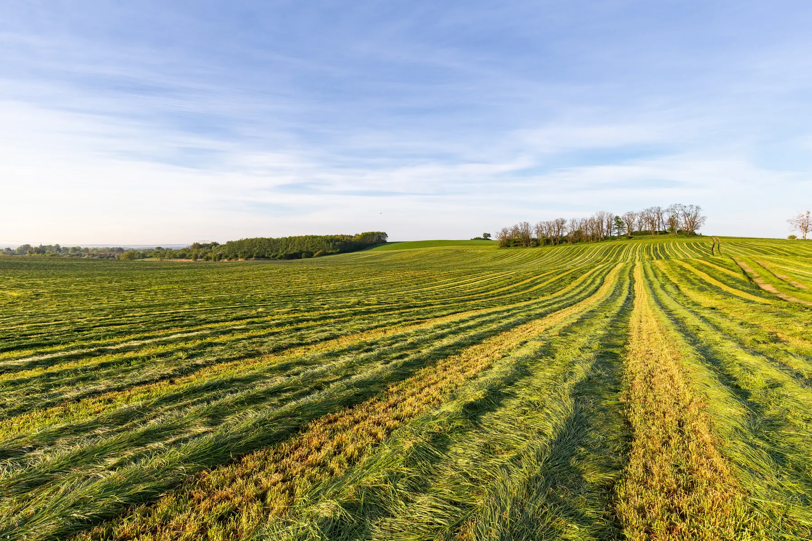

- Startseite
- Philosophie
Alles selbst gemacht. Vom Futter bis zur Milch.
„Von der Erzeugung des Futters bis zum fertigen Produkt machen wir alles selbst.“ So beschreibt Gunnar Hemme, was Hemme Milch ausmacht.

Dafür stehen wir
Regionalität
Die Hemme Milch Frische: Eigenes Futter. Eigene Kühe. Eigene Molkerei. Dazu Milch ausgewählter Partnerhöfe.
Transparenz
Landwirtschaft ganz nah: Erlebt auf unserem Hof, wo die Milch herkommt, von unseren Kühen bis zur Molkerei.
Mit Sorgfalt
Für vollen Geschmack: Schonende Verarbeitung der Milch in handwerklichen Herstellverfahren.
Verantwortung
Ein Kreislauf: Unsere Landwirtschaft verbindet Futteranbau, Tierhaltung und die Düngung der Felder.
Mit Herz geführt
Als Familienunternehmen stehen wir für ehrliche Qualität aus Überzeugung.
Genuss
Unsere gute Milch und unsere exzellenten Milchprodukte sollen Freude bereiten und hervorragend schmecken.
Vom Saatkorn bis zum fertigen Milchprodukt

Eigenes Futter
Im Frühjahr und Sommer stehen unsere Kühe auf der Weide. Sonst fressen sie Luzerne, Gras, Mais, Rapsschrot und eine Getreidemischung, dazu Mineralstoffe. Rund 90 % des Futters wachsen auf unseren Feldern.

Eigene Kühe
Auf unserem Hof und bei vier Partnerhöfen leben rund 600 Kühe. Zweimal am Tag holen wir sie von der Weide zum Melken.

Eigene Molkerei
Die frisch gemolkene Milch fließt über eine Leitung nur wenige Meter direkt in die Molkerei. Täglich verarbeiten wir rund 33.000 Liter Milch.

Eigener Service
Die Annahme der Bestellungen, die Planung der Auslieferung und das Ausliefern liegen in unserer Hand.
Hemme in Zahlen
- Kühe, eigene und von vier Partnerhöfen
- 600
- des Futters wächst auf unseren Feldern
- 90 %
- Liter Milch verarbeiten wir täglich
- 33.000
- liefern wir die erste Milch aus Schmargendorf aus
- 1998
Gentechnikfrei und regional
Milch ist unser Rohstoff. Grundlage aller Hemme-Produkte ist gentechnikfreie Milch in ausgezeichneter Qualität. Bei der Fütterung verzichten wir und unsere Partnerhöfe auf Sojaschrot aus den USA und auf Silage aus gentechnisch verändertem Mais.
Mehrmals im Jahr werden alle Futterkomponenten untersucht, unter anderem auf Energie, Eiweiß, Schadstoffe und Gentechnikfreiheit.
Bio im Sinne der Biorichtlinien ist Hemme Milch nicht. Wir setzen auf Regionalität, Transparenz und Echtheit.

Unser Weg zu Null
Wir arbeiten an einer klimaneutralen Produktion und betreiben Solaranlagen auf den großen Dachflächen. Dazu kommt eine Biogasanlage. Wir sind regional, frisch und halten unsere Wege so kurz wie möglich, um unseren „way to zero“ zu finden.

Geprüft und ausgezeichnet
Ohne Gentechnik
Gentechnikfreie Fütterung, regelmäßig kontrolliert.
Regionalmarke Uckermark
Herkunft aus der Uckermark.
Prüfzeichen Schorfheide-Chorin
Hemme versteht sich als Teil des Biosphärenreservats und sucht die Balance zwischen Natur und handwerklicher Verarbeitung.
pro agro
Verband zur Förderung regionaler Lebensmittel aus Brandenburg.
Unsere Geschichte
Seit 1589 Landwirtschaft in der Familie, seit 1998 Hemme Milch in der Uckermark.